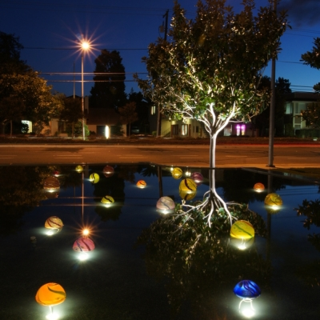
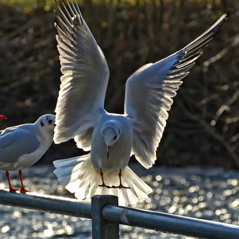

My Background
So let's start with the basics! My name is Henry but my family call me Harry, just like Prince Harry is actually called Henry and my friends call me Barry, or Baza! Don't ask why, this can all get rather confusing and sometimes I don''t know who I am!!
I’m an aspiring web designer who loves everything about the web. I've lived in Kent for pretty much my whole life and have worked in a few different jobs. Building and developing websites via content management syatems has been the most enjoyable. I’m excited to bring my experience from this tech degree to building amazing websites.
I have recently embarked on a techdegree course with Treehouse where I will be learning Front End Web Development using Html, Css and Javascript.
My Goals
I want to master the process of building web sites and increase my knowledge, skills and abilities in:
- HTML
- CSS
- JavaScript
- Ruby
- Rails
I would either like to work for a web design firm or on a freelance basis helping busines's create an impressive online presence.
I started to learn how to create websites via content managment systems (CMS) platforms by teaching myself using online tutorials. I quickly became proficient at creating websites on Squarespace and Wix. I felt as if this may of been holding me back and that not a lot of busines's were looking for a website built on sites like this. I set mysekf a goal of starting a tech degree at Treehouse and so far it's been amazing!
My Hobbies
What I get up to in my spare time
Where do I start, Im sure if you asked any of my friends what i enjoy the most they would probably say shopping. I am a shapaholic and very into designer brands, champagne taste ;) must have got that from my father.
Going out with my partner and her daughter. We usually go on long walks around the countryside or we will go to a park and let her daughter wear herself out so she's ready for bed when we get home haha.
My favourite hobby is travelling because I love discovering new cities and places around the world. I often save up for months to plan a trip every year. I love the build up knowing in a few months I will be sitting by a pool or exploring new places.
